조경기사 (2017-03-05 기출문제)
1과목: 조경사
1. 영국의 비컨헤드 파크(Birkenhead Park)의 설명으로 옳지 않은 것은?
- 역사상 최초로 시민의 힘과 재정으로 조성된 공원이다.
- 수정궁을 설계한 조셉 팩스턴(Joseph Paxton)이 설계하였다.
- 그린스워드(Greensward) 안(案)에 의하여 조성된 공원이다.
- 넓은 초원, 마찻길, 연못, 산책로 등이 조성되었다.
(정답률: 82%)

2. 다음 전통정원과 정원에 조성된 대(臺)가 잘못 연결된 것은?
- 세연정 - 매대
- 소쇄원 - 대봉대
- 서석지 - 옥성대
- 도산서원 - 천광운영대
(정답률: 46%)
3. T.V.A(Tenessee Valley Authority)에 대한 설명 중 옳지 않은 것은?
- 최초의 광역공원계통
- 미국 최초의 광역지역계획
- 계획ㆍ설계 과정에 조경가들이 대거 참여
- 수자원개발의 효시이자 지역개발의 효시
(정답률: 58%)
4. 르 코르뷔지에(Le Corbusier)가 제안한 빌라 래디어스의 내용과 가장 거리가 먼 것은?
- 오픈 스페이스 중시
- 토지이용 체계의 주종 관계 고려
- 저층 주거 형태에서의 쾌적성 확보
- 적절한 비례의 격자형 가로 공간 구조
(정답률: 59%)
5. 동궁과 월지(안압지)에 대한 설명으로 틀린 것은?
- 바닥을 강회로 처리하였다.
- 삼국사기와 동사강못에서 기록을 볼 수 있다.
- 지형상 동안(東岸)보다 서안(西岸)이 높다.
- 북안(北岸)과 동안(東岸은 직선적 형태이다.
(정답률: 69%)
6. 동양의 조경 관련 옛 문헌과 저자의 연결이 틀린 것은?
- 귤준망 - 작정기
- 문진형 - 장물지
- 서유구 - 임원경제지
- 소굴원주 - 축산정조전
(정답률: 56%)
7. 중국 고문헌 설문해자에 기술된 “과일나무를 심는 곳” 을 의미하는 용어는?
- 유(囿)
- 원(園)
- 포(圃)
- 정(旌)
(정답률: 81%)
8. 다음 중 누정의 경관 처리 기법과 가장 관계가 없는 것은?
- 허(墟)
- 취경과 다경
- 축경
- 팔경
(정답률: 55%)
9. 중국 조경의 특징 중 태호석을 고를 때 주요 고려 요소가 아닌 것은?
- 누(漏)
- 경(景)
- 수(瘦)
- 추(皺)
(정답률: 67%)
10. 다음 중 건축에 비해 조경이 강조되고, 베르사이유(Versailles) 궁에 영향을 준 것은?
- Malmaison
- Ermenonville
- Petit Trianon
- Vaux le Vicomte
(정답률: 83%)
11. 왕의 화단, 연못과 분수, 대수로와 캐스케이드가 특징인 프랑스 앙드레 르 노트르의 작품은?
- 말메종(Malmason)
- 풍텐블로(Fontainebleau)
- 에르메농빌르(Ermenonville)
- 프티 트리아농(Petit Trianon)
(정답률: 57%)
12. 창덕궁의 명당수 어구에 설치한 금천교(1411) 북쪽에 세워진 동물 조각상은?
- 기린
- 용
- 거북
- 호랑이
(정답률: 81%)
13. 서양 중세(中世) 초기(初期)에 발달한 정원 양식은?
- 빌라(villa)
- 민가(民家)
- 수도원(修道院)
- 왕이나 귀족의 별장
(정답률: 80%)
14. 중국 송의 유학자 주돈이의 애련설과 관련된 보길도 윤선도 원림에 있는 시설은?
- 익청헌(益淸軒)
- 동천석실(洞天石室)
- 낙서재(樂書齋)
- 녹우당(綠雨堂)
(정답률: 47%)
15. 토피어리, 미원(maze), 총림 등이 대규모로 조성되고 비밀분천, 경악분천, 물 풍금 등이 도입된 정원 양식은?
- 고전주의 양식
- 매너리즘 양식
- 바로크 양식
- 로코코 양식
(정답률: 77%)
16. 파르테논 신전의 특징에 대하 설명으로 틀린 것은?
- 비례적 구성
- 유동적 곡선
- 균제법 응용
- 착시현상 무시
(정답률: 74%)
17. 영국 풍경식 정원의 탄생에 기여한 작가가 아닌 사람은?
- Inigo Thomas
- Earl shaftesbury
- Joseph Addison
- Alexander pope
(정답률: 47%)
18. 다음 동양의 정원에 대한 설명으로 틀린 것은?
- 자연과 인간을 대립관계가 아니 유기적 일원체로 이해했다.
- 고대에는 임전형의 정원이 공통적으로 출현하고 있다.
- 유교, 불교사상은 정원발달에 크게 영향을 미쳤다.
- 간접적인 자연의 관찰과 정형적인 인공미 원칙에 기반을 두고 있다.
(정답률: 82%)
19. 일본 전통 수경요소 가운데 견수(筧水: 야리미즈)와 가장 가까운 형태는?
- 샘
- 연지
- 소폭포
- 인공적 계류
(정답률: 70%)
20. 고대 이집트에서 나일강을 중심으로 장제신전(분묘)과 예배신전은 어디에 위치하였는가?
- 장제시전은 서쪽, 예배신전은 동쪽에 입지
- 장제시전은 동쪽, 예배신전은 서쪽에 입지
- 장제신전과 예배신전 둘 다 동쪽에 입지
- 장제신전과 예배신전은 나일강 방향에 나란하게 입지
(정답률: 73%)
2과목: 조경계획
21. 도시인구 20만명, 취업율 30%, 제조업 인구구성비 25%, 제조업인구 1인당 점유 토지 면적 300m2이다. 이 때 공업지의 총 소요 면적은 얼마인가?(단, 공업지 내의 공공용지율은 40%이다.)
- 600ha
- 750ha
- 900ha
- 1100ha
(정답률: 59%)
22. 『도시공원 및 녹지 등에 관한 법률 시행령』상 주민의 요청이 있을 시에는 공원조성 계획의 정비를 요청할 수 있도록 되어 있다. 이에 적합한 요건은?
- 소공원: 공원구역 경계로 부터 250m이내에 거주하는 주민 500명 이상의 요청
- 어린이공원: 공원구역 경계로 부터 500m이내에 거주하는 주민 800명 이상의 요청
- 근린공원: 공원구역 경계로 부터 1000m이내에 거주하는 주민 1,000명 이상의 요청
- 체육공원: 공원구역 경계로 부터 1000m이내에 거주하는 주민 2,000명 이상의 요청
(정답률: 55%)
23. 다음 중 GIS의 기능적 요소가 아닌 것은?
- 자료 처리
- 자료 복원
- 자료 출력
- 자료 관리
(정답률: 76%)
24. 다음 [보기]는 「도시계획 관련 규정」 중 어느 법에 대한 설명인가?
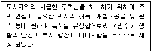
- 주택법
- 도시개발법
- 주택건설촉진법
- 택지개발촉진법
(정답률: 66%)
25. 다음 [보기]에 제시하는 정의는 어떤 학문 분야에 대한 설명인가?
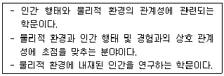
- 인체공학
- 환경생태학
- 인간생태학
- 환경심리학
(정답률: 56%)
26. 다음 어린이놀이시설의 설치와 관련 된 설명 중 ( )안에 적합한 용어는?(관련 규정 개정전 문제로 여기서는 기존 정답인 1번을 누르면 정답 처리됩니다. 자세한 내용은 해설을 참고하세요.)
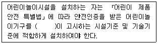
- 국민안전처장관
- 국토교통부장관
- 문화체육관광부장관
- 산업통상자원부장관
(정답률: 73%)
27. 린치(K. Lynch)가 제시한 도시 이미지 형성에 기여하는 물리적 요소에 해당되지 않는 것은?
- 통로(Paths)
- 모서리(edges)
- 지역(districts)
- 장소성(sense of place)
(정답률: 78%)
28. "어떤 지역에서 레크리에이션의 질은 유지하면서 지탱 할 수 있는 레크리에이션 이용의 레벨“ 이라는 Wagar(1974)의 정의는 다음의 무엇에 관한 설명인가?
- 자연완충능력
- 생태적 적정효과
- 레크리에이션 자원잠재능력
- 레크리에이션 한계수용능력
(정답률: 79%)
29. 『도시공원 및 녹지 등에 관한 법률』의 다음 설명 중 ( )안에 맞는 용어는?
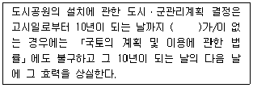
- 공원부지의 매입
- 공원의 조성완료
- 공원관리계획의 수립
- 공원조성계획의 고시
(정답률: 59%)
30. 광역도시계획의 수립 시, ‘광역계획원이 같은 도의 관할구역에 속하여 있는 경우’, 광역도시계획의 수립권자는?
- 관할 시ㆍ도지사
- 국토교통부장관
- 관할 시장 또는 군수가 공동
- 인구가 더 많은 시장 또는 군수
(정답률: 49%)
31. 토양 단면의 구분에 있어서 연결이 잘못된 것은?
- O층: 유기물층
- A층: 용탈층(표토)
- B층: 집적층(심토)
- C층: 기반암(무기물층)
(정답률: 72%)
32. 수요량 예측이 공간의 규모를 결정짓게 되는데, 반대로 계획의 규모가 수용량의 한계를 결정짓기도 한다. 수요량 산출 공식에 해당하지 않는 것은?
- 시계열 모델
- 중력 모델
- 요인분석 모델
- 혼합형 모델
(정답률: 54%)
33. 다음 중 행태분석 모델 중 “지각된 환경의 질에 대한 지표를 의미하며, 환경의 질에 관한 측정 기준을 설정하여 보다 체계적이고 객관적인 환경설계를 수행할 수 있는 기반 조성을 위하 모델” 은 무엇인가?
- 순환모델
- 3차원모델
- 역모델
- PEQI
(정답률: 75%)
34. 생태학자인 오덤(Odum)이 제안한 개념 중 개체 혹은 개체군의 생존이나 성장을 멈추도록 하는 요인으로, 인내의 한계를 넘거나 이 한계에 가까운 모든 조건을 지칭하는 용어는?
- 엔트로피(entropy)
- 제한인자(limiting factor)
- 시각적 투과성(visual transparency)
- 생태적 결정론(ecological determinism)
(정답률: 72%)
35. 다음 중 오픈스페이스에 대한 설명으로 옳지 않은 것은?
- 지붕 없이 하늘을 향해 열려 있는 땅이다.
- 주변이 수직적인 요소로 둘러싸인 공지를 말한다.
- 공원이나 녹지 등과 같이 도시계획 시설의 하나이다.
- 집, 공장, 사무실 등과 같은 건물이나 시설물이 지어지지 않은 땅을 말한다.
(정답률: 45%)
36. 자연휴양림의 조성과 관련된 설명 중 틀린 것은?
- 자연 휴양림으로 지정된 산림에 휴양시설의 설치 및 숲 가꾸기 등을 하고자 하는 자는 농림축산식품부령이 정하는 바에 따라 휴양시설 및 숲 가꾸기 등의 조성계획을 작성하여 시ㆍ지사의 승인을 받아야 한다.
- 시ㆍ도지사는 관련 규정에 따라 자연휴양림조성계획을 승인한 때에는 산림청장에게 통보하여야 한다.
- 산림청장은 자연휴양림조성계획에 따라 자연 휴양림을 조성하는 자에게 그 사업비의 전부 또는 일부를 보조하거나 융자할 수 있다.
- 자연휴양림을 조성하는 경우에는 「산지기본법」관련 규정에 따라 산지전용신고를 하지 않은 것으로 보고 30일 이내에 신고한다.
(정답률: 60%)
37. 이용후평가(P.O.E)는 시공 후 이용자들이 사용한 뒤에 이루어지는 평가로, 공간계획의 피드백 효과가 높은 방법이다. 이용후 평가에 있어서 물리ㆍ사회적 환경 요소가 아닌 것은?
- 이용자의 만족도
- 관리의 양호도
- 이용자의 기호도
- 이용재료의 특성
(정답률: 39%)
38. 다음 설명의 ( )안에 해당하는 자는?
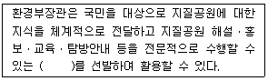
- 문화재해설사
- 환경영향평가사
- 지질공원해설사
- 명예습지생태안내사
(정답률: 78%)
39. 다음 쭝 아파트 단지내 가로망 유형별 특징으로 옳지 않은 것은?
- 격자형은 토지 이용상 효율적이나 단조로운 경관을 만들기 쉽다
- 우회형은 통과교통이 상대적으로 적어 주거환경의 안전성을 확보하기 용이하다.
- 막다른 골목형은 통과교통을 최대한 줄일 수 있으며 각 건물에 접근하는데 불편하다.
- 격자형은 지형의 변화가 심한 곳에서 적용하기 유리하다.
(정답률: 72%)
40. 조경기본계획 작성 과정에서 자료 분석 종합 대안 설정기준으로서 일반적으로 가장 먼저 고려되어야 할 사항은?
- 동선 및 식재
- 토지이용 및 동선
- 공급처리 및 구조물
- 식재 및 공급처리시설
(정답률: 75%)
3과목: 조경설계
41. 조경설계의 미적요소 중 강조(accent)에 대한 설명과 가장 거리가 먼 것은?
- 보는 사람의 주의력을 사로잡을 수 있다.
- 경관 연출의 극적 효과를 위해 사용한다.
- 연속되거나 형태를 이룬 대상들 가운데서 일어나는, 하나의 시각적 분기점이다.
- 형태, 색채 또는 질감을 디자인에 응용할 때 다양성과 대비를 위해 강조를 사용한다.
(정답률: 56%)
42. 다음 그림은 연못 바닥 단면 상세도이다. ㉠~㉤을 순서대로 바르게 기입한 것은?
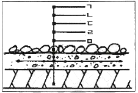
- ㉠철근, ㉡조약돌 깔기, ㉢잡석다짐, ㉣콘크리트, ㉤방수몰탈
- ㉠잡석다짐, ㉡철근, ㉢콘크리트, ㉣방수몰탈, ㉤조약돌 깔기
- ㉠조약돌 깔기, ㉡방수몰탈, ㉢콘크리트, ㉣철근, ㉤잡석다짐
- ㉠방수몰탈, ㉡콘크리트, ㉢조약돌 깔기, ㉣철근, ㉤잡석다짐
(정답률: 73%)
43. 다음은 재3각법으로 도시한 물체의 투상도이다. 이 투상법에 대한 설명으로 틀린 것은?(단, 화살표 방향은 정면도이다.)
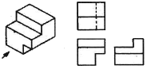
- 평면도는 정면도 위에 배치된다.
- 배면도의 위치는 가장 오른쪽에 배열된다.
- 눈 → 투상면 → 물체의 순서로 놓고 투상한다.
- 물체를 제1면각에 놓고 투상하는 방법이다.
(정답률: 56%)
44. 경관을 구성하는 지배적인 요소가 아닌 것은?
- 연속성(sequence)
- 색채(color)
- 선(line)
- 질감(text)
(정답률: 66%)
45. 조경 제도에서 대상물의 보이지 않는 부분을 표시하는데 사용하는 선의 종류는?
- 파선
- 1점 쇄선
- 2점 쇄선
- 가는 실선
(정답률: 72%)
46. 다음의 두 도형에 있어서 동일 면적인 작은 원 a, b 중 a가 b보다 크게 보이는 착시현상은 무엇 때문인가?
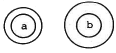
- 대비의 착시
- 분할의 착시
- 면적에 대한 착시
- 수평수집에 의한 착시
(정답률: 55%)
47. 도면에 사용하는 인출선에 대한 설명으로 틀린 것은?
- 치수선의 보조선이다.
- 가는 실선을 사용한다.
- 도면 내용물의 대상 자체에 기입할 수 없을 때 사용한다.
- 식재설계시 수목명, 수량, 규격을 기입하기 위해 사용한다.
(정답률: 65%)
48. 다음 그림과 같이 2개의 자연요소를 맥하그(McHarg)의 도면결합법(overlay method)로 분석 하였을 때 최적지는 몇 점인가?(단, 점수가 높을수록 최적지임)
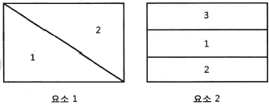
- 7
- 6
- 5
- 4
(정답률: 66%)
49. Albedo 값이 높은 것부터 낮은 것 순으로 옳게 나열한 것은?
- 눈 → 산림 → 바다 → 마른모래
- 마른모래 → 산림 → 눈 → 바다
- 눈 → 마른모래 → 산림 → 바다
- 산림 → 바다 → 마른모래 → 눈
(정답률: 65%)
50. 산림지역에서 지도상에 표시한 몇 개의 지점을 지도와 나침반만을 사용하여 가능한 한 짧은 시간 내에 발견, 통과, 골인하는 스포츠를 무엇이라 하는가?
- 오리엔트 링크(Orient Link)
- 오리엔테이션(Orientation)
- 자연 탐방로(Nature Trail)
- 오리엔트 파크(Orient Park)
(정답률: 67%)
51. 도시경관과 자연경관에 대한 설명 중 틀린 것은?
- 일반적으로 자연경관이 도시경관에 비해 선호도가 높다.
- 도시경관의 복잡성은 자연경관의 복잡성보다 상대적으로 낮다.
- 자연경관이 도시경관에 비해 색채대비가 낮다.
- 자연경관은 도시경관에 비해 부드러운 질감을 가진다.
(정답률: 72%)
52. 노약자, 신체장애인을 고려한 시설 설계기준으로 틀린 것은?
- 보도의 경사도는 10% 이내가 적당하다.
- 보도 면은 바퀴가 빠지지 않도록 틈이 없어야 한다.
- 휠체어 사용자가 통행할 수 있는 경사로의 유효폭은 120cm 이상으로 한다.
- 안내시설은 어린이와 장애인을 고려하여 보행동성에서 1m 이내가 되도록 계획한다.
(정답률: 68%)
53. 조경설계기준에서 정한 의자(벤치)에 관한 설명으로 틀린 것은?
- 지면으로부터 등받이 끝까지 전체 높이는 80~100cm를 기준으로 한다.
- 의자의 길이는 1인당 최소 45cm를 기준으로 하되, 팔걸이 부분의 폭은 제외한다.
- 앉음판의 높이는 약 34~46cm를 기준으로 하되 어린이를 위한 의자는 낮게 할 수 있다.
- 등받이 각도는 수평면을 기준으로 약 95~110°를 기준으로 하고, 휴식시간이 길수록 등받이 각도를 크게 한다.
(정답률: 59%)
54. “가까이 있는 두 가지 이상의 색을 동시에 볼 때 색의 삼속성 차이로 서로 영향을 받아 색이 다르게 보이는 대비 현상” 에 적용되는 것은?
- 면적대비
- 동시대비
- 계시대비
- 연속대비
(정답률: 71%)
55. 공원의 휴식공간에 설치하고자 하는 음수대(飮水臺)의 디자인에 영향을 주는 요소로 가장 거리가 먼 것은?
- 사용대상
- 사용목적
- 배수시설
- 관리유무
(정답률: 55%)
56. 등고선 간격(수직거리)이 60m일 때 경사도가 20%이면, 축척(縮尺) 1:30000 인 지도상에서 등고선 간의 평면거리(수평거리)는?
- 1cm
- 2cm
- 3cm
- 5cm
(정답률: 52%)
57. 해가 지면서 주위가 어두워지는 해 질 무렵 낮에 화사하게 보이던 빨간색 꽃은 어둡고 탁해보이고, 연한 파란색 꽃들과 초록색의 잎들은 밝게 보이는 현상은 무엇인가?
- 푸르키니에 현상
- 컬러드 셰도우 현상
- 베졸트-브뤼케 현상
- 헬슨-저드 효과
(정답률: 76%)
58. 조경설계기준상의 『생태못』설계와 관련된 설명으로 옳지 않은 것은?
- 일반적으로 종 다양성을 높이기 위해 관목숲, 다공질 공간 등 다른 소생물권과 연계되도록 한다.
- 야생동물 서식처 목적의 생태연못의 최소 폭은 5m 이상 확보하고 주변식재를 위해 공간을 확보한다.
- 수질정화 목적의 못은 수질정화 시설의 유출부에 설치하여 2차 처리된 방류수(방류수 10ppm)를 수원으로 한다.
- 수질정화 목적의 못 안에 붕어 등의 물고기를 도입하고, 부레옥잠, 달개비, 미나리 등 수질 정화 기능이 있는 식물을 배식한다.
(정답률: 70%)
59. 1/25000 지형도상에서 시(市) 경계는 어떤 선으로 표현되는가?
(정답률: 58%)
60. 시점(eye point)이 가장 높은 투시도는?
- 평행 투시도
- 조감 투시도
- 유각 투시도
- 사각 투시도
(정답률: 76%)
4과목: 조경식재
61. 야생생물 유치를 위한 생태적 배식설계의 방법과 직접적으로 관련되지 않는 것은?
- 식물종을 다양화 한다.
- 에코톤(Ecotone)을 조성한다.
- 서식처 크기를 획일적으로 조성한다.
- 수직적 식생구조를 층화(層化)한다.
(정답률: 70%)
62. 생태계 단편화가 생물에게 미치는 영향으로 틀린 것은?
- 오염/교란 증가
- 주연부 감소
- 종조성 변화
- 서식처 면적 감소
(정답률: 51%)
63. 다음 중 미선나무의 특징으로 틀린 것은?
- 두릅나무과(科)의 수종이다.
- 학명은 Abeliophyllum distichum 이다.
- 성상은 납엽활엽광목이며, 열매는 부채꼴형이다.
- 이른 봄에 흰색 또는 분홍색 꽃이 잎보다 먼저 핀다.
(정답률: 53%)
64. 중부지방의 석유화학공업단지 식재에 가장 적합한 수종은?
- 산수국, 튤립나무
- 가죽나무, 가시나무
- 은행나무, 무궁화
- 일본잎갈나무, 산수국
(정답률: 59%)
65. 대량번식이 가능하고, 교잡에 의해 새로운 식물체를 만들 수 있는 번식방법은?
- 삽목
- 취목
- 접목
- 실생
(정답률: 47%)
66. 생태적 복원 중 ‘대체(replacement)'에 대한 설명으로 옳지 않는 것은?
- 현재의 상태를 개선하기 위하여 다른 생태계로 원래의 생태계를 대체하는 것
- 유사한 기능을 지니면서도 다양한 구조의 생태계를 창출하는 것
- 완벽한 복원보다는 못하지만 원래의 자연 상태와 유사한 것을 목적으로 하는 것
- 구조에 있어서는 간단할 수 있지만, 보다 생산적일 수 있는 것
(정답률: 51%)
67. 수목류를 활용한 식재의 방법 중 틀린 것은?
- 차폐수벽공법은 수벽을 3열로 조성할 때는 중앙에 활엽교목을 1열로 식재하고, 그 앞뒤에 칩엽수 또는 관목으로 배식한다.
- 차폐수벽공법은 수벽을 4열로 조성할 때는 중앙에 교목을 2열로 열식하고 앞이나 혹은 뒤에 관목을 배식한다.
- 소단상객토식수공법의 소단은 나무를 심고 자랄 수 있는 충분한 너비를 가져야 하며, 소단상 객토는 깊이 0.3m 이상, 너비 1.0m 이상을 표준으로 한다.
- 식생상심기는 암석을 채굴하고 깎아낸 대규모 암반비탈의 소단위에 객토와 시비를 한 후, 녹화용 묘목을 식재하여 수평선상으로 녹화하고자 설계한다.
(정답률: 41%)
68. 수목의 명명법에 관련된 설명 중 옳지 않은 것은?
- 학명은 라틴어로 표기한다.
- 학명(學名)의 속명(屬名)은 소문자로 시작한다.
- 학명은 전 세계적으로 동일하게 통용되는 장점이 있다.
- 학명은 속(屬)명과 종(種)명이 연결된 이명식(二名式)이다.
(정답률: 71%)
69. 열매의 형태가 시과(翅果, samara)가 아닌 수종은?
- 당단풍나무
- 참느릅나무
- 물푸레나무
- 비목나무
(정답률: 40%)
70. 다음 그림 중 안접(鞍接)에 해당하는 것은?
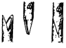
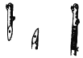
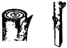
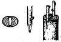
(정답률: 58%)
71. 수목식재 공사에 대한 설명으로 틀리 것은?
- 식재구덩이 내 불순물을 제거한 양질토사를 넣고 바닥을 고른다.
- 가로수 식재의 마감면은 보도 연석면 보다 3cm 이하로 끝마무리 한다.
- 수목 앉히기가 끝나면 물을 식재구덩이에 충분히 붓고 각목 등으로 저어 흙이 뿌리분에 완전히 밀착되게 한다.
- 수목의 운반거리, 운반로 상태 등을 고려하여 뿌리분의 크기를 가능한 한 작게 하여 운반을 용이하도록 한다.
(정답률: 68%)
72. 다음 중 우리나라 특산수종이 아닌 것은?
- 구상나무
- 미선나무
- 개느삼
- 계수나무
(정답률: 60%)
73. 조경수목의 삽목 번식에 있어 발근과 관계되는 요인에 대한 설명으로 틀리 것은?
- 온대식물의 상토 내 적온은 15~25°C이며, 항온조건보다 변온조건이 더 좋다.
- 캘러스가 형성되고 근원체가 움직일 무렵에는 상토를 약간 말려 주는 것이 좋은 결과를 가져다준다.
- 녹지삽에 있어서는 상토의 적습유지와 함께 삽목상을 감도는 공기를 포화상태에 가까운 높은 습도로 유지하는 것이 뿌리내림에 대한 중요한 조건이 된다.
- 삽수의 뿌리내림을 좋게 하기 위해서 정오에 햇빛에 일정시간 노출시킨다.
(정답률: 54%)
74. 홍만선의 산림경제(山林經濟)에 의한 수목 식재 원칙으로 옳지 않은 것은?
- 서북쪽에는 큰 나무를 심지 않고 동남쪽에는 큰 나무를 심는다.
- 마당 한가운데를 피하고 마당가의 담장 쪽에 심는다.
- 크기나 수종이 같은 것은 대칭으로 심거나 열식하지 않는다.
- 한 공간 내에서 질감의 강한 대조는 주지 않는다.
(정답률: 60%)
75. 옥상녹화용 인공지반에 사용 될 녹화용(綠化用)인공토 선정 시 우선적으로 고려할 사항이 아닌 것은?
- 가벼워야 한다.
- 보수성이 좋아야 한다.
- 영양분이 많아야 한다.
- 배수성이 양호해야 한다.
(정답률: 60%)
76. 추이대(推移帶, ecotone)와 관련된 설명으로 틀린 것은?
- 숲과 초원 등 군집 사이의 이행부이다.
- 추이대에서만 살고 있는 고유종이 존재할 수 있다.
- 종수나 일부 종의 밀도가 인접한 군집보다 높다.
- 양 군집의 인접부위로서 그 폭이 인접군집보다 훨씬 넓다.
(정답률: 67%)
77. 노각나무의 과명(科名)과 꽃색은?
- 느릅나무과, 황색
- 물푸레나무과, 백색
- 장미과, 적색
- 차나무, 백색
(정답률: 45%)
78. 우리나라 남부지방에서 많이 식재되는 상록활엽수종이 아닌 것은?
- Daphne odora
- Osmanthus fragrans
- Gardenia jasminoides
- Viburnum carlesii
(정답률: 33%)
79. 무기양료와 관련된 식물조직의 구성 성분이 아닌 것은?
- N: 단백질
- Ca: 세포벽
- K: 효소
- Mg: 엽록소
(정답률: 54%)
80. 느릅나무과(科)의 수종이 아닌 것은?
- Ficus carica
- Zelkoua serrata
- Celtis sinensis
- Ulmus dauidiana var. japonica
(정답률: 39%)
5과목: 조경시공구조학
81. 다음 토사절취의 설명 중 A, B에 해당하는 것은?
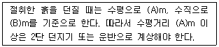
- A:2.5, B: 3,5
- A:3.0, B: 2,0
- A:3.0, B: 4,5
- A:5.0, B: 4,0
(정답률: 63%)
82. 다음 수문방정식(유입량=유출량+저류량)에서 유출량에 해당하지 않는 것은?
- 강수량
- 증발량
- 지표유출량
- 지하유출량
(정답률: 68%)
83. 다음 자전거 도로 설계의 설명으로 옳지 않은 것은?
- 자전거도로의 폭은 하나의 차로를 기준으로 1.5m 이상으로 한다.
- 자전거전용도로의 설계속도는 시속 30km 이상으로 한다.
- 자전거도로의 7% 종단경사에 따른 제한 길이는 350m 이하로 한다.
- 자전거도로의 곡선부에는 설계속도나 눈이 쌓이는 정도 등을 고려하여 편경사를 두어야 한다.
(정답률: 64%)
84. 그림과 같은 보에서 점 B에서의 굽힘 모멘트의 크기는 몇 kNm인가?
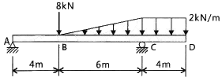
- 8.0
- 9.2
- 16.0
- 17.6
(정답률: 20%)
85. 어떤 A부지는 잔디지역의 면적 0.4ha(유출계수 0.25), 아스팔트 포장지역의 면적 0.2ha(유출계수 0.9)로 구성되어 있다.. 강우강도는 20mm/h 일 때, A지역의 총 우수유출량(m3/sec)은?
- 0.0⑤6
- 0.0100
- 0.0156
- 5.6000
(정답률: 62%)
86. 강(鋼)과 비교한 알루미늄의 특징 중 옳지 않은 것은?
- 강도가 작다
- 비중이 작다.
- 열팽창률이 작다.
- 전기 전도율이 높다.
(정답률: 54%)
87. 콘크리트의 크리프에 영향을 미치는 요인에 대한 설명으로 틀린 것은?
- 습도가 낮을수록 크리프 변형은 커진다.
- 재하 하중이 클수록 크리프 변형은 커진다.
- 콘크리트 온도가 높을수록 크리프 변형은 커진다.
- 고강도의 콘크리트 일수록 크리프 변형은 커진다.
(정답률: 45%)
88. 수준측량에서 부정(우연)오차로 판단되는 것은?
- 시차로 인하 오차
- 광선 굴절에 의한 오차
- 지반 연약으로 인한 오차
- 표척의 눈금이 표준척에 비해 약간 크게 표시되어 발생하는 오차
(정답률: 44%)
89. 옥상녹화 시스템의 식재기반 구성요소에 해당 되지 않은 것은?
- 방수층
- 배수층
- 집적층
- 식재기반층
(정답률: 66%)
90. 화강암에 관하 설명으로 옳지 않은 것은?
- 산화철을 포함하면 미홍색을 띤다.
- 질이 단단하고 내구성 및 강도가 크다.
- 색은 주로 석영에 의해 좌우된다.
- 외관이 수려하고 절리의 거리가 비교적 커서 큰 판재를 생산할 수 있다.
(정답률: 56%)
91. 다음과 같은 특징을 갖고 있는 조명등은?
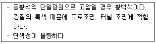
- 할로겐등
- 고출력형광등
- 형광수은등
- 나트륨등
(정답률: 60%)
92. 중용열 포틀랜드시멘트에 대한 설명 중 옳지 않은 것은?
- 내구성이 크며 장기강도가 크다
- 방사선 차단용 콘크리트에 적합하다.
- 수화열량이 적어 하중공사에 적합하다.
- 단기강도는 조강 포틀랜드시멘트보다 작다.
(정답률: 43%)
93. 수중콘크리트에 대하 다음 설명 중 A와 B에 알맞은 것은?
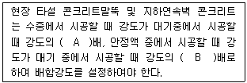
- A: 0.8, B: 0.7
- A: 0.7, B: 0.8
- A: 0.7, B: 0.7
- A: 1.2, B: 1.4
(정답률: 48%)
94. 공정표의 하나인 횡선식 공정표(Bar Chart)에 대한 설명으로 틀린 것은?
- 최적안 선택 기능이 전무하다.
- 문제점의 사전 예측이 어렵다.
- 작업의 선후 관계를 파악하기 용이하다.
- 각 공종을 세로로, 날짜를 가로로 잡고 공정을 막대그래프로 표시한다.
(정답률: 56%)
95. 클로소이드 곡선(Clothoid curve)에 대한 설명 중 옳지 않은 것은?
- 곡률이 곡선의 길이에 비례하는 곡선이다.
- 단위 클로소이드란 매개변수 A가 1이 클로소이드이다.
- 클로소이드는 닮은꼴인 것과 닮은꼴이 아닌 것 두 가지가 있다.
- 클로소이드에서 매개변수 A가 정해지면 클로소이드의 크기가 정해진다.
(정답률: 51%)
96. 공사관리의 핵심은 시공계획과 시공관리로 구분되는데, 다음 중 시공관리의 4대 목표에 포함되지 않는 것은?
- 노무관리
- 품질관리
- 원가관리
- 공정관리
(정답률: 60%)
97. 흉고(근원) 직경에 의한 식재의 품에 대한 설명이 틀린 것은?
- 기계시공 씨 지주목을 세우지 않을 경우는 인력품의 10%를 감한다.
- 식재 후 1회 기준의 물주기는 포함되어 있으며, 유지관리는 별도 계상한다.
- 현장의 시공조건, 수목의 성상에 따라 기계시공이 불가피한 경우는 별도 계상한다.
- 품은 재료 소운반, 터파기, 나무세우기, 묻기, 물주기, 지주목세우기, 뒷정리를 포함한다.
(정답률: 69%)
98. 옹벽의 구조적 안정성을 위해 필요한 기본적인 검토 요소와 가장 거리가 먼 것은?
- 활동(sliding)
- 침하(settlement)
- 전도(overturning)
- 우력(couple forces)
(정답률: 58%)
99. 다음 보의 종류 중 캔틸레버보에 해당하는 것은?
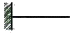
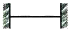
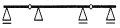
(정답률: 64%)
100. 식물생장에 적합한 표토모으기와 관련된 설명 중 거리가 먼 것은?
- 표토의 토양산도(pH)는 6.0~7.0 범위를 채집대상으로 한다.
- 표토보관과 관련하여 가적치의 최적두께는 1.5m를 기준으로 한다.
- 표토가 습윤상태이고, 지하수위가 높은 평탄지를 대상으로 채취한다.
- 표토의 운반거리는 최소로 하고, 운반양은 최대로 한다.
(정답률: 50%)
6과목: 조경관리론
101. 유지관리를 위해 공원 내 태풍으로 쓰러진 키가 큰 나무를 기계톱으로 절단할 때 유의할 사항으로 틀린 것은?
- 절단은 후진하면서 작업한다.
- 소나무나 활엽수 등은 가지의 끝부분부터 작업한다.
- 가급적 안내판이 짧은 기계톱을 사용한다.
- 작업자는 쓰러진 나무 위에서 가지제거 작업을 실시하지 않는다.
(정답률: 55%)
102. 레크리에이션의 자원관리 중 “프로그램 단계”에 속하지 않는 것은?
- 생태계 관리
- 이용자관리
- 경관관리
- 안전(장해)관리
(정답률: 32%)
103. 가지 위 방향을 바꾸기 위해서 시초를 자르지 않고 가지 비틀기를 하는 대표적이 조경수는?
- 은행나무
- 벚나무
- 소나무
- 자작나무
(정답률: 63%)
104. 2,4-D의 작용특성에 속하는 것은?
- 호흡 억제
- 동화작용 증진
- 세포분열의 이상유발
- 저온에서 작용력 증진
(정답률: 45%)
1⑤. 비료의 화학적 반응에 대한 설명으로 옳은 것은?
- 비료 자체의 수용액 고유의 반응
- 식물이 양분을 흡수하는 데 매우 중요
- 비료의 화학적 반응과 생리적 반응은 일치
- 화학적 반응은 산성과 염기성 반응으로 구분
(정답률: 40%)
106. 단일균사에 의하여 각피침입을 하는 병원체는?
- 낙엽송 끝마름병균
- 소나무류 잎떨림병균
- 동백나무 쟂빛곰팡이병균
- 밤나무 줄기마름병균
(정답률: 38%)
107. 불리한 환경에 따른 곤충의 활동정지(quiescence)와 휴면(diapause)에 대한 설명으로 옳은 것은?
- 활동정지는 환경조건이 호전되면 곧 발육이 재개된다.
- 의무적 휴면의 예는 흰불나방에서 찾아볼 수 있다.
- 기회적 휴면은 1년에 한 세대만 발생하는 곤충이 갖는다
- 일장(日長)은 휴면으로의 진입여부에 결정에 중요한 요소는 아니다.
(정답률: 57%)
108. 다음 중 카바메이트계(carbanate) 농약은?
- 펜티온 유제
- 디티오피르 유제
- 이프로디온 수화제
- 티오파네이트메틸 수화제
(정답률: 57%)
109. 다음 중 파이토플라스마(phytoplasma)에 의해 발생되는 수목병이 아닌 것은?
- 철쭉류 떡병
- 뽕나무 오갈병
- 대추나무 빗자루병
- 오동나무 빗자루병
(정답률: 58%)
110. 토양에서 서식하고, 충분한 수분을 요구하며, 주로 목조 건물 및 목조 구조물에 피해를 주는 해충은?
- 흰개미
- 그리마
- 흰불나방
- 독일바퀴벌레
(정답률: 69%)
111. 농약의 약자와 농약 제형이 잘못 표기된 것은?
- (수) : 수화제
- (훈) : 훈연제
- (유) : 유제
- (입) : 입제
(정답률: 60%)
112. 식물 표면에서 제초제의 흡수 과정과 관련된 설명으로 옳지 않은 것은?
- 극성의 제초제에 습윤제를 첨가하며 제초제의 독성은 감소된다.
- 비극성(친유성) 제초제는 큐티클 납질층을 친수성보다 잘 통과한다.
- 계면활성제는 극성 제초제가 큐티클 납질층을 잘 통과하도록 도와준다.
- 친수성 제초제의 통과는 펙틴, 큐틴 순으로 잘되나 납질은 통과가 어렵다.
(정답률: 46%)
113. 식물병은 예방이 주축을 이루고, 치료는 아직까지 그 일부에 지나지 않는데, 그 이유로 합당하지 않는 것은?
- 경제적으로 방제 경비가 제한된다.
- 식물병의 치료는 원인 규명이 중요하다.
- 식물은 채내에 순환계를 지니지 않고 있다.
- 방제에 사용되는 약제의 대부분이 치료효과가 확실하지 않다.
(정답률: 43%)
114. 저수호안의 생태개비온 설치 및 관리에 관한 사항으로 틀린 것은?
- 하천 및 수로 등의 세굴이 예상되는 부분에는 안정을 위해 자연상태 그대로 방치하여 수생식물 및 관목들의 유입을 도모한다.
- 돌채움이 끝나면 뚜껑을 철선으로 단단히 묶어야 하며, 개비온망 끼리 일체가 되도록 연결부를 단단히 결속하여야 한다.
- 기초지반이 연약할 경우에는 지반개량을 실시하거나. 버림콘크리트 등을 타설하여 개비온의 하중을 지지하여야 한다.
- 도입식생은 설계도서에 따르되 일반적으로 수생식물, 광목 등을 도입하며, 식재방법은 파종, 포트식재 등의 기법과 호안의 안정성을 높이기 위한 식생매트 등을 복합 사용할 수 있다.
(정답률: 54%)
115. 공원 녹지 내 특별 행사(Event) 개최 목적이 아닌 것은?
- 공원 녹지 이용의 다양화 유도
- 행정 주도형 공원 녹지의 추구
- 커뮤니케이션(Communication)의 도모
- 주민 간 공감을 통한 문화적 유대감 증대
(정답률: 71%)
116. 수분 공급을 위한 관수방법으로 가장 알맞은 것은?
- 스프링클러는 대면적 관수작업 시 효율적이다.
- 도랑식 관수는 경사도나 유속과 상관없이 균일한 관수가 가능하다.
- 하루 중 관수 시기는 정오를 기준으로 하는 것이 가장 좋다.
- 식물이 위조현상을 보인 후에 관수해도 상관없다.
(정답률: 64%)
117. 토양수분함량 측정법이 아닌 것은?
- 중성자법
- 양성자법
- 석고블럭법
- 텐시오미터법
(정답률: 38%)
118. 비기생성 식물이 아닌 것은?
- 칡
- 겨우살이
- 노박덩굴
- 청미래덩굴
(정답률: 52%)
119. 도시공원의 점용(占用)에 대한 설명 중 옳은 것은?
- 공원 내 집회나 모임은 불가능하다.
- 점요허가 만료 후 원상복구는 반드시 공원 관리청이 시행해야 한다.
- 점용료 수입을 올리기 위해 가능한 한 많은 점용허가를 해준다.
- 공원관리청 이외의 사람도 점용허가를 받아 공원 내 공작물이나 시설물을 설치할 수 있다.
(정답률: 59%)
120. 다음 중 비결정형(부정형) 광물은?
- 일라이트(illite)
- 알로펜(allophane)
- 카올리나이트(koolinite)
- 몬모릴로나이트(montmorillonite)
(정답률: 36%)